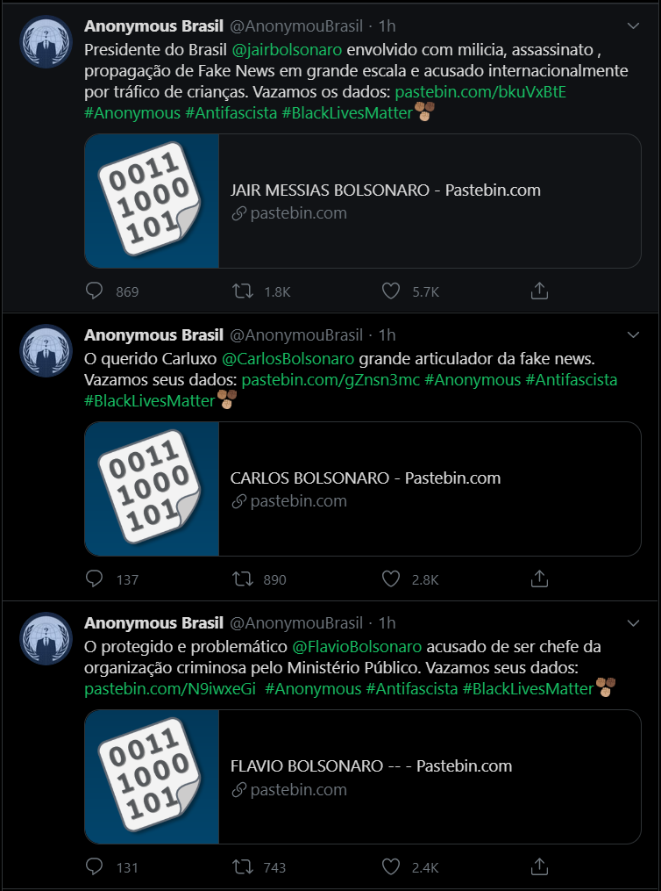
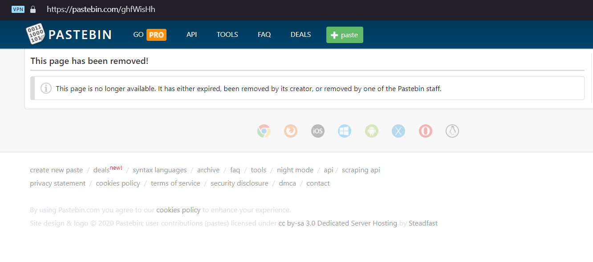
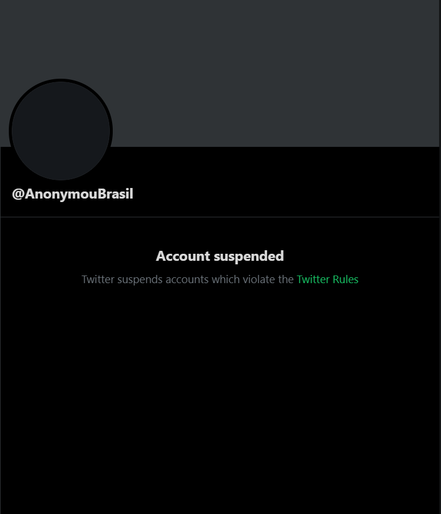

Dados confidenciais da família Bolsonaro e ministros da Educação e dos Direitos Humanos estão disponíveis no site Pastebin. O vazamento foi anunciado pela célula brasileira descentralizada de hacktivistas Anonymous às 21h30 (horário de Brasília) desta segunda (1º), no Twitter.
Nos documentos era possível encontrar informações pessoais detalhadas (RG e CPF, telefones, endereço físico, contas de e-mail, propriedades, atividades de trabalho, declarações de imposto de renda, score do Cadastro de Pessoa Física, histórico partidário, além de informações de parentes) de Jair Bolsonaro (sem partido), dos filhos Flavio Bolsonaro (Republicanos-RJ), Carlos Bolsonaro (PSC-RJ) e Eduardo Bolsonaro (PSL-SP); dos ministros Abraham Weintraub (Ministério da Educação) e Damares Alves (Ministério da Mulher, da Família e dos Direitos Humanos); do deputado estadual Douglas Garcia (PSL-SP) e de Luciano Hang (cofundador da Havan).>
Cerca de uma hora depois do anúncio, o coletivo publica um link que levaria aos dados do deputado estadual Douglas Garcia e sua família, o primeiro de mais sete. No tuíte, o Anonymous Brasil lembrou de uma publicação do parlamentar feita na tarde desta segunda (1º), no próprio Twitter, cuja mensagem pedia por nomes de pessoas autodenominadas "antifascistas" e seus respectivos 'comprovantes', estes para serem encaminhados ao seu e-mail corporativo. Solicitou também retuítes para ajudá-lo na perseguição destes perfis.
Logo depois, dados pessoais do ministro da Educação, Abraham Weintraub; da ministra Damares Alves, descrita como "inimiga dos direitos da Mulher, da Família dos Direitos Humanos"; do empresário e simpatizante do governo Luciano Hang; de Eduardo, Flávio e Carlos Bolsonaro; por fim, do presidente Jair Bolsonaro foram liberados. Oito links apontavam para o site Pastebin, os quais continham informações consideráveis das vítimas citadas. Além disso, foram publicadas acusações diretas, cada uma acompanhada com as hashtags #Anonymous, #Antifascista e #BlackLivesMatter.
Entretanto, não demorou muito para que os arquivos upados no Pastebin fossem removidos pelo próprio site. A conta que publicava em nome do Anonymous Brasil também teve o mesmo destino, agora é possível ver apenas um aviso de "conta suspensa" por ter violado as regras do Twitter.
Arquivos com dados confidenciais das autoridades ficaram disponíveis durante algumas horas no site Pastebin. Fonte: arquivo pessoal
Por violar as regras da rede social, a conta utilizada pelo coletivo foi suspensa horas depois das postagens. Fonte: arquivo pessoal